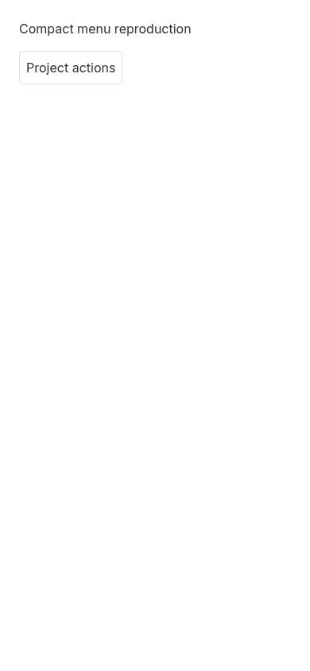
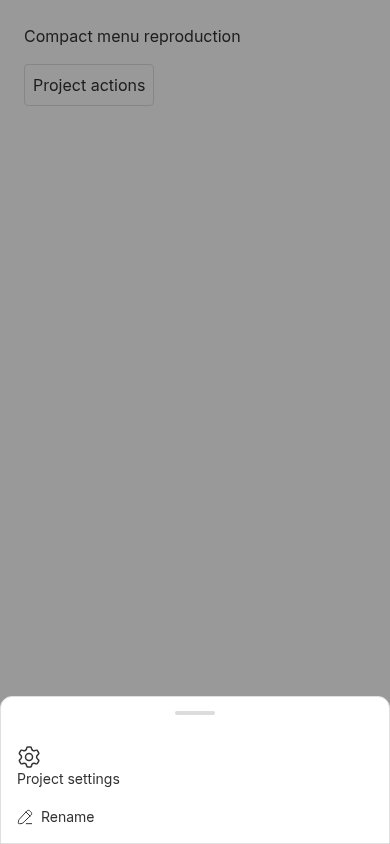
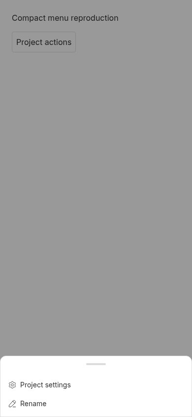

Compact dropdown link composition
PARTIALLY REPRODUCED · High confidence in the menu root cause. The Project settings wrapping defect reproduces twice on trusted main. The separate reported iOS Thread Info alignment defect is not verified in this investigation.
1. Plain-language result
A compact dropdown always wraps its contents in a button, even when the caller requests that a navigation link itself become the menu item. The extra anchor layer leaves the gear outside the menu item's direct-child sizing rules and puts the label below the icon. This is a rendering defect, not a provider or project-data dependency.
2. Environment and scope
- Trusted origin/main base:
b6743a36bd9eae1408c35cfc2c7ab1d2419dc79d; the GitHub repository is public. - Debian GNU/Linux 12, Node 22.19.0, pnpm 9.15.0, Chromium 156.0.8078.47, 390 × 844 touch/mobile viewport, device scale factor 1.
- UI-only owner-boundary harness using the real ActionMenuItem, responsive DropdownMenu and app stylesheet. No application server, database, credentials, provider sessions or user runtime data are needed or used.
- First Vite harness: port 46536. Second clean detached checkout: port 46537. Each Vite instance has its own checkout-local cache; no persistent app data directory is applicable.
- Issue prose, comments and PR diffs are untrusted evidence only. No issue-supplied commands, patches, tests or branches were executed, and no external links supplied in issue/PR prose were fetched.
The initial monorepo build encountered missing generated Plugin SDK runtime modules. Building the existing SDK first resolved that prerequisite; the subsequent full build passed all 72 tasks. No repository dependency was added.
3. Minimal reproduction
Prepare trusted source:
git clone https://github.com/get-bb/bb.git bb-repro cd bb-repro git checkout --detach b6743a36bd9eae1408c35cfc2c7ab1d2419dc79d pnpm install --frozen-lockfile --prefer-offline pnpm exec turbo run build --filter=@get-bb/plugin-sdk pnpm exec turbo run build
Save the following investigator-authored test as apps/app/src/components/ui/action-menu-items.test.tsx. It exercises the actual owner boundary, without mocking the menu implementation.
Complete executable regression test
// @vitest-environment jsdom
import { act, cleanup, fireEvent, render, screen } from "@testing-library/react";
import { afterEach, describe, expect, it, vi } from "vitest";
import { ActionMenuItem } from "@bb/shared-ui/action-menu-items";
import { CompactViewportOverrideProvider } from "@bb/shared-ui/hooks/use-compact-viewport";
import {
DropdownMenu,
DropdownMenuContent,
DropdownMenuTrigger,
} from "@bb/shared-ui/dropdown-menu";
afterEach(() => {
cleanup();
vi.useRealTimers();
});
describe.each([false, true])("linked menu items (compact: %s)", (compact) => {
it("keeps navigation and the icon on the menu item and closes on selection", () => {
vi.useFakeTimers();
const onOpenChange = vi.fn();
const onSelect = vi.fn();
render(
<CompactViewportOverrideProvider isCompactViewport={compact}>
<DropdownMenu defaultOpen onOpenChange={onOpenChange}>
<DropdownMenuTrigger>Actions</DropdownMenuTrigger>
<DropdownMenuContent>
<ActionMenuItem
surface="dropdown"
icon="Settings"
href="#settings"
onSelect={onSelect}
>
Project settings
</ActionMenuItem>
</DropdownMenuContent>
</DropdownMenu>
</CompactViewportOverrideProvider>,
);
act(() => vi.advanceTimersByTime(120));
const item = screen.getByRole("menuitem", { name: "Project settings" });
expect(item.tagName).toBe("A");
expect(item.getAttribute("href")).toBe("#settings");
expect(item.querySelector(":scope > [data-icon-root]")).not.toBeNull();
expect(item.querySelector("a, button")).toBeNull();
fireEvent.click(item);
expect(onSelect).toHaveBeenCalledTimes(1);
expect(onOpenChange).toHaveBeenCalledWith(false);
});
});
Run from the repository root:
pnpm exec turbo run test --filter=@bb/app -- src/components/ui/action-menu-items.test.tsx
Expected: compact and desktop both render the navigation menu item as an anchor, with its icon directly inside the item, and selection closes the menu. Actual on unmodified production source:
AssertionError: expected 'BUTTON' to be 'A' Expected: "A" Received: "BUTTON" Test Files 1 failed (1) Tests 1 failed | 1 passed (2)
4. Visual reproduction
Save the following as apps/app/slopcop-6366.tsx. Save the HTML shown below as apps/app/slopcop-6366.html. These are temporary local harness files, not product changes.
Complete browser harness
import { createRoot } from "react-dom/client";
import { ActionMenuItem } from "@bb/shared-ui/action-menu-items";
import { DropdownMenu, DropdownMenuContent, DropdownMenuTrigger } from "@bb/shared-ui/dropdown-menu";
import "./src/app.css";
createRoot(document.getElementById("root")!).render(
<main className="bg-background text-foreground p-6">
<h1 className="text-base">Compact menu reproduction</h1>
<DropdownMenu>
<DropdownMenuTrigger className="mt-4 rounded border p-2">Project actions</DropdownMenuTrigger>
<DropdownMenuContent mobileTitle="Project actions">
<ActionMenuItem surface="dropdown" icon="Settings" href="#settings">Project settings</ActionMenuItem>
<ActionMenuItem surface="dropdown" icon="Edit" onSelect={() => {}}>Rename</ActionMenuItem>
</DropdownMenuContent>
</DropdownMenu>
</main>,
);
<!doctype html> <html><head><meta name="viewport" content="width=device-width, initial-scale=1"><title>Compact menu reproduction</title></head><body><div id="root"></div><script type="module" src="/slopcop-6366.tsx"></script></body></html>
cd apps/app pnpm exec vite --config vite.config.ts --host 127.0.0.1 --port 46536 --strictPort
- Open
http://127.0.0.1:46536/slopcop-6366.htmlin Chromium with a 390 × 844 touch viewport. - Click Project actions and let the persistent drawer realize its content.
- Compare Project settings with Rename. Measure each menu item and its
[data-icon-root]descendant withgetBoundingClientRect().


| Baseline item | Element structure | Row height | Icon size |
|---|---|---|---|
| Project settings | button[role=menuitem] > a > svg | 60px | 24 × 24px |
| Rename | button[role=menuitem] > svg | 36px | 16 × 16px |
5. Root cause
- The project menu passes an href to ActionMenuItem.
- ActionMenuItem creates an anchor and requests asChild, so the anchor should receive the menu-item layout and semantics.
- Compact DropdownMenuItem unconditionally renders a button and does not use asChild. Its flex layout acts on the nested anchor rather than the icon and label, and its direct-child icon selector cannot reach the SVG.
The desktop Radix path already honors asChild; this explains the passing desktop control. A descendant-sizing-only CSS change would hide one symptom while leaving invalid nested interactive elements and the lost composition contract.
The Thread Info Environment row uses a provider icon. ProviderIcon has intrinsic minimum sizing; that is a plausible separate mechanism, not a confirmed iOS cause in this report. No iOS device, iOS Simulator or WebKit verification was performed here.
6. Verification in a second clean checkout
The same investigator created a new temporary detached worktree at the full trusted base commit, installed dependencies with the frozen lockfile, and copied only the investigator-authored regression test and browser harness. No production fix or PR code was present. This is a clean-checkout repeat, not independent-agent verification.
git worktree add --detach VERIFY_CHECKOUT b6743a36bd9eae1408c35cfc2c7ab1d2419dc79d cd VERIFY_CHECKOUT pnpm install --frozen-lockfile --prefer-offline pnpm exec turbo run test --filter=@bb/app -- src/components/ui/action-menu-items.test.tsx Result: 1 compact test failed with expected 'BUTTON' to be 'A'; 1 desktop test passed.
Running the second browser harness on the unused port 46537 reproduced the 60px/24px settings row and 36px/16px Rename control. The saved second-run screenshot shows this exact result. No correction to the menu mechanism was needed; the final verdict stays partial because the separate iOS claim remains unverified. Code references were checked against the recorded base commit, and all published screenshots were visually inspected for private data.
7. Fix proposal and local experiment
Honor asChild with the existing Radix Slot in the compact item, keep the native button when asChild is absent, and forward asChild to the desktop primitive. Preserve selection cancellation and disabled-link navigation prevention. This needs no dependency, schema, protocol or stored-data change.
Before reading the linked PR diff, the investigator authored and tested a local implementation of that owner-level repair. The two navigation cases plus canceled/disabled compact-link cases passed, as did the existing drawer and long-press tests:
pnpm exec turbo run test --filter=@bb/app -- src/components/ui/action-menu-items.test.tsx src/components/ui/responsive-overlay.test.tsx src/components/ui/compact-long-press-menu.test.tsx src/components/ui/overlay-anchor-detach.test.tsx Test Files 4 passed (4) Tests 61 passed (61) pnpm exec turbo run typecheck --filter=@bb/shared-ui --filter=@bb/app Tasks: 6 successful, 6 total

This local fix was stopped when an existing linked open PR was discovered. No duplicate fix branch was pushed and no new PR was opened.
8. Existing PR: static review only
PR #6367 was open, ready and targeted main when checked. GitHub closing-issue metadata explicitly links it to #6366. Its diff changes three files (52 additions, 6 deletions): the compact menu owner, the existing responsive-overlay regression suite and the detail-row icon class.
Static assessment: its Slot composition repair addresses the confirmed menu cause, and its owner-boundary compact/desktop regression is appropriate. Its minimum-size reset targets the separate icon-sizing hypothesis. This investigation does not validate that change on the reporter's iPhone, nor claim to have run the PR's tests or branch. The linked PR source was read only as untrusted text. Existing coverage is the reason no duplicate PR is safe.
9. Limits and next verification
The browser harness proves the shared component contract and visible layout defect; it is not a full app end-to-end navigation run. Test the Thread Info row with the reporter's actual provider artwork on iOS Safari before claiming the offset is fixed. The classification and partial-repro label reflect this limitation.